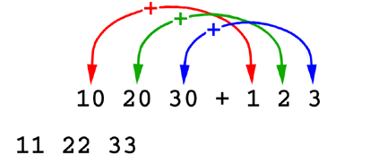

As stated in the introduction, the term integer is used in this manual to indicate not only a domain of values but also a particular internal representation. To refer to the same domain of values when both integer and floating-point representations are allowed, the term restricted whole number is used. These floating-point representations need only be tolerably equal to the integers.
Although they are listed alphabetically in this chapter, for convenient reference, the A+ dyadic scalar primitive functions can be grouped in five categories:
- the most common arithmetical functions: Add, Subtract, Multiply, Divide, Power;
- other computational functions: Residue, Log, Circle, Combine Symbols;
- selection functions: Max (greater of), Min (lesser of);
- comparison functions: Equal to, Not equal to, Less than, Less than or Equal to, Greater than, Greater than or Equal to;
- logical functions: And, Or.
All dyadic scalar functions produce scalars from scalars, and apply element by element to their arguments: they are applied to each pair of elements - one from each argument - independently of the others. There are three conformable cases for dyadic scalar functions:
The element-by-element application of the functions and the above conformability rules for their arguments are assumed in the following descriptions.
- The arguments have identical shapes. In this case, corresponding elements from the two arguments are paired. The shape of the result equals the common shape of the arguments.

Multiple errors elicit but one report. Eight reports, including interrupt, are common to all dyadic primitive scalar functions, and each of these reports is issued only if none of the preceding ones apply:
Except where noted, the omission of the left argument results not in a valence error report, but in the invocation of a monadic function or an operator that shares the function symbol.
- parse: this error class includes valence errors that result from three or more arguments in braces;
- value: an argument has no value;
- nondata: an argument is a function or some other nondata object;
- type: an argument is of an illicit type;
- rank: conformability rules are not satisfied and the ranks of the arguments differ;
- length: conformability rules are not satisfied because of a mismatch in a dimension of the arguments;
- wsfull: the workspace is currently not large enough for execution of the function; a bare left arrow (û), which dictates resumption of execution, causes the workspace to be enlarged if possible;
- interrupt (not an error): the user pressed c twice (once if A+ was started from a shell) while holding the Control key down.
The arguments and result are simple numeric arrays. For two nonempty arguments, the result is integer if both arguments are integer and all result elements lie inside the range of integer representation, and floating point otherwise. If exactly one argument is empty, the result is floating point if that argument is floating point, and otherwise its type is the type of the nonempty argument. If both are empty, then if one is floating point and the other integer the result is floating point, and otherwise its type is the type of the right argument.Definition
y plus x. The result may include Inf or ¢Inf.Example
¢1 0 1 1e308+10 20 30 1e308 9 20 31 Inf
The arguments are simple arrays of restricted whole numbers. The result is an integer array.Definition
If x and y have boolean values (0 and 1) then y^x is the Logical And of y and x. That is:Additional Error Report Condition
- 1^1 equals 1
- Any other boolean combination (1^0 or 0^1 or 0^0) equals 0
And is strictly boolean, never bitwise. All nonzero restricted whole numbers are treated as if they were 1.
To get bitwise behavior, use the Bitwise operator.
If none of the common error conditions are reported (including an illicit, i.e., not simple numeric, type) then:Examples
- a type error is reported if an argument is not a restricted whole number.
0 0 1 1^0 1 0 1
0 0 0 1
43^14
1
The arguments and result are simple numeric arrays. Additionally, the left argument can also be symbolic. The result is always in floating point.Definition
Strictly, the elements of a numeric left argument y must be restricted whole numbers from -7 to 7; however, all floating-point numbers greater than -8 and less than 8 are accepted and, in effect, rounded toward zero to produce integers. Each element of y indicates the trigonometric, hyperbolic, or algebraic function to be applied to the corresponding element of the right argument x. All angles are in radians. See the table for details.Additional Error Report
Notation for the Circle Functions A+ Expression Meaning A+ Expression Meaning `sinarccos Ïx or 0Ïx (1-x*2)*0.5 `sin Ïx or 1Ïx sin x `arcsin Ïx or ¢1Ïx arcsin x `cos Ïx or 2Ïx cos x `arccos Ïx or ¢2Ïx arccos x `tan Ïx or 3Ïx tan x `arctan Ïx or ¢3Ïx arctan x `secarctan Ïx or 4Ïx (1+x*2)*0.5 `tanarcsec Ïx or ¢4Ïx (¢1+x*2)*0.5 `sinh Ïx or 5Ïx sinh x `arcsinh Ïx or ¢5Ïx arcsinh x `cosh Ïx or 6Ïx cosh x `arccosh Ïx or ¢6Ïx arccosh x `tanh Ïx or 7Ïx tanh x `arctanh Ïx or ¢7Ïx arctanh x When both arguments are scalar, using the symbolic form adds about 40% to the processing time; the symbolic form adds less, of course, when the right argument is non-scalar. Symbolic form is heartily encouraged for all but the most time-critical applications.
If none of the common errors listed above are reported, then:Example
- a domain error is reported if the absolute value of an element of the left argument is equal to or greater than 8, and also if the absolute value of the right argument is less than 1 for left argument -4 or greater than 1 for left arguments of 0, -1, -2, and -7.
1 1 3 ¢3 Ï Ïß2 4 2 0 ã sin(pi/2), sin(pi/4), tan(pi/2), arctan(Inf) 1 0.7071067812 1.633177873e+16 1.570796327
The arguments and result are simple arrays of symbols.Definition
This function takes context names and unqualified names and produces qualified names. More generally, for each scalar pair y,x: if, as displayed, x has a dot (period) in it, then the value of yÖx is x, and y is ignored; otherwise, the result is the symbol that is displayed as y, followed by a dot, followed by x without its backquote.Examples
`c Ö `x `d.y `.z
`c.x `d.y `.z
`b.c `a Ö `x `y
`b.c.x `a.y
The arguments and result are simple numeric arrays. The result is always floating point.Definition
y divided by x. Division of a positive number by zero yields Inf, a unique scalar, and division of a negative number by zero yields ¢Inf.Additional Error Report
If none of the errors listed in "Common Error Reports" are reported, then:Example
- a domain error is reported for 0ß0.
0 1 2 3 4 ¢5ß2 2 2 2 0 0 0 0.5 1 1.5 Inf ¢Inf
The arguments can be of any type. The result is boolean (integer type with values 0 and 1).Dependency
Comparison tolerance, if an argument is in floating point (see "Comparison Tolerance").Definition
The value is 1 if y tolerably equals x, and 0 if not.Additional Error Report
If there is no parse or value error (see "Common Error Reports"), then:Examples
- a valence error is reported if the left argument is missing.
' '='this is it'
0 0 0 0 1 0 0 1 0 0
(<2 3, 4+1e-13)=(2 3 4;'abcde';É5 6)
1 0 0
1 2 3 = '123'
0 0 0
The arguments are simple numeric, character, or symbol arrays. The result is boolean (integer type with values 0 and 1).Dependency
Comparison tolerance, if an argument is in floating point (see "Comparison Tolerance").Definition
The value is 1 if y is greater than x and not tolerably equal to x, and 0 otherwise. Characters are compared using their ASCII codes and symbols using the usual lexical ordering based on the ASCII codes of their component letters.Examples
(¢200 0 90 100 101 200,(100+1e-12),100+1e-11)>100
0 0 0 0 1 1 0 1
'b' > 'abc'
1 0 0
'B' > 'abc' ã ASCII, not English, order.
0 0 0
`b > `a`b`c
1 0 0
`B > `a`b`c ã Likewise.
0 0 0
`pint > `cup `pints `pound `quart `snootful `gallon
1 0 0 0 0 1
The arguments are simple numeric, character, or symbol arrays. The result is boolean (integer type with values 0 and 1).Dependency
Comparison tolerance, if an argument is in floating point (see "Comparison Tolerance").Definition
The value is 1 if y is greater than x or tolerably equal to x, and 0 otherwise. Characters are compared using their ASCII codes and symbols using the usual lexical ordering based on the ASCII codes of their component letters.Additional Error Report
If there is no parse or value error (see "Common Error Reports"), then:Example
- a valence error is reported if the left argument is missing.
¢200 0 90 100 101 200¦100 0 0 0 1 1 1
The arguments are simple numeric, character, or symbol arrays. The result is boolean (integer type with values 0 and 1).Dependency
Comparison tolerance, if an argument is in floating point (see "Comparison Tolerance").Definition
The value is 1 if y is less than x and not tolerably equal to x, and 0 otherwise. Characters are compared using their ASCII codes and symbols using the usual lexical ordering based on the ASCII codes of their component letters.Example
¢200 0 90 100 101 200<100 1 1 1 0 0 0
The arguments are simple numeric, character, or symbol arrays. The result is boolean (integer type with values 0 and 1).Dependency
Comparison tolerance, if an argument is in floating point (see "Comparison Tolerance").Definition
The value is 1 if y is less than x or tolerably equal to x, and 0 otherwise. Characters are compared using their ASCII codes and symbols using the usual lexical ordering based on the ASCII codes of their component letters.Additional Error Report
If there is no parse or value error (see "Common Error Reports"), then:Example
- a valence error is reported if the left argument is missing.
¢200 0 90 100 101 200¤100 1 1 1 1 0 0
The arguments and result are simple numeric arrays. The result is always in floating point.Definition
The logarithm of x to the base y.Example
Additional Error Report10ð.1 1 10 100 1000 1234.5 0 ¢1 0 1 2 3 3.091491094 ¢Inf
If none of the reports cited in "Common Error Reports" is issued, then:
- a domain error is reported if an element of either argument is negative or if corresponding elements of the two arguments are both 1.
The arguments and result are simple numeric arrays. For two nonempty arguments, the result is integer if both arguments are integer, and floating point otherwise. If exactly one argument is empty, the result is floating point if that argument is floating point, and otherwise its type is the type of the nonempty argument. If both are empty, then if one is floating point and the other integer the result is floating point, and otherwise its type is the type of the right argument.Definition
The greater of y and x. When this function is used in Reduction (Ó/), the name Max is appropriate.Example
0 Ó 3 .5 ¢1 5 ¢.1 3 .5 0 5 0
The arguments and result are simple numeric arrays. For two nonempty arguments, the result is integer if both arguments are integer, and floating point otherwise. If exactly one argument is empty, the result is floating point if that argument is floating point, and otherwise its type is the type of the nonempty argument. If both are empty, then if one is floating point and the other integer the result is floating point, and otherwise its type is the type of the right argument.Definition
The lesser of y and x. When this function is used in Reduction (Ä/), the name Min is appropriate.Example
99.5 100 91.1 112 99 Ä 100 99.5 100 91.1 100 99
The arguments and result are simple numeric arrays. For two nonempty arguments, the result is integer if both arguments are integer and all result elements lie inside the range of integer representation, and floating point otherwise. If exactly one argument is empty, the result is floating point if that argument is floating point, and otherwise its type is the type of the nonempty argument. If both are empty, then if one is floating point and the other integer the result is floating point, and otherwise its type is the type of the right argument.Definition
y times x.Example
10«0 1 2 3 1e308 0 10 20 30 Inf
The arguments can be of any type. The result is boolean (integer type with values 0 and 1).Dependency
Comparison tolerance, if an argument is in floating point (see "Comparison Tolerance").Definition
The value is 1 if y is not tolerably equal to x, and 0 if it is.Additional Error Report
If there is no parse or value error (see "Common Error Reports"), then:Examples
- a valence error is reported if the left argument is missing.
' '¨'this is it'
1 1 1 1 0 1 1 0 1 1
(<2 3, 4+1e-13)¨(2 3 4;'abcde';É5 6)
0 1 1
1 2 3 ¨ '123'
1 1 1
The arguments are simple numeric arrays of restricted whole numbers. The result is an integer array.Definition
If x and y have boolean values (0 or 1) then y©x is the Logical Or of x and y. That is:Additional Error Reports
1©1 equals 1©0 equals 0©1 equals 1;
0©0 equals 0.Or is strictly boolean, never bitwise. All nonzero restricted whole numbers are treated as if they were 1.
To get bitwise behavior, use the Bitwise operator.
If none of the common error conditions is reported, then, with a domain report preempting a type report:Examples
- a domain error is reported (by Cast, actually) if the left argument is Null;
- a type error is reported if an argument is not a restricted whole number, unless the arguments are suitable for Cast.
0 0 1 1©0 1 0 1
0 1 1 1
43©14
1
The arguments and result are simple numeric arrays. The result is always floating point.Definition
y to the power x. 10*2 is exactly equal to 1e2 but in general there is a very slight (tolerable) difference between 10*N and 1eN, because logarithms are used except in this special case, whereas 1eN is exact.Example
2*0 .5 1 2 3 4 5 6 7 8 1025 1 1.414213562 2 4 8 16 32 64 128 256 Inf
The arguments and result are simple numeric arrays. For two nonempty arguments, the result is integer if both arguments are integer, and floating point otherwise. If exactly one argument is empty, the result is floating point if that argument is floating point, and otherwise its type is the type of the nonempty argument. If both are empty, then if one is floating point and the other integer the result is floating point, and otherwise its type is the type of the right argument.Dependency
Comparison tolerance, if an argument is in floating point (see "Comparison Tolerance").Definition
y|x is the remainder when x is divided by y. 0|x equals x. If y is nonzero, then y|x is x-y«Äxßy, in accordance with the mathematical definition of modular arithmetic, except as follows. If x is tolerably equal to n«y, where n is a whole number not necessarily representable by type `int, then the result is 0. (So Inf|x and ¢Inf|x are always 0.)Examples
100 | 1930 1941 1952 1978, 100+1e-12
30 41 52 78 0
1.4 1.4 ¢1.4 ¢1.4 | 3.7 ¢3.7 3.7 ¢3.7
0.9 0.5 ¢0.5 ¢0.9
The arguments and result are simple numeric arrays. For two nonempty arguments, the result is integer if both arguments are integer and all result elements lie inside the range of integer representation, and floating point otherwise. If exactly one argument is empty, the result is floating point if that argument is floating point, and otherwise its type is the type of the nonempty argument. If both are empty, then if one is floating point and the other integer the result is floating point, and otherwise its type is the type of the right argument.Definition
y minus x.Example
¢1 0 99.5 1e308 - .5 ¢1 .5 ¢1e308 ¢1.5 1 99 Inf
| doc@aplusdev.org | © Copyright 1995–2008 Morgan Stanley Dean Witter & Co. All rights reserved. |